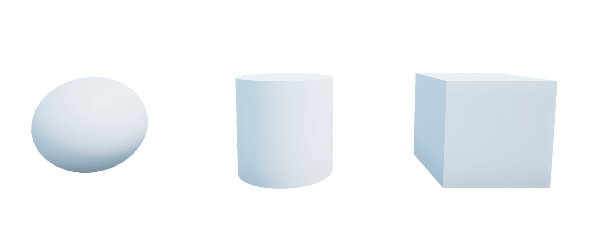

Basic Shapes
Description
Basic shapes are building blocks to modify and customize your environment. All shapes are spawned by default as static objects complete with collision boundaries which can be useful to create walls and other obstacles. Dynamics can be enabled and disabled to facilitate dynamic events that are triggered by actor locations such as the sudden appearance of an obstacle crossing the path. The physics properties can also be modified to tune the physics response depending on the number of interacting actors and what they are colliding with.
Basic shapes include full support for parenting to build long kinematic chains or simply to group multiple shapes together so they can be moved by manipulating a single parent actor.
If you are using a large number of dynamic shapes, consider using Widgets instead. They have both limitations and additional features, but are more efficient when spawning large numbers of dynamic actors.
See the Tutorial to get a better understanding of using people in Quanser Interactive Labs.
Library
Constants
- QLabsBasicShape.ID_BASIC_SHAPE = 200
Class ID
- QLabsBasicShape.SHAPE_CUBE = 0
- QLabsBasicShape.SHAPE_CYLINDER = 1
- QLabsBasicShape.SHAPE_SPHERE = 2
Member Variables
- QLabsBasicShape.actorNumber = None
The current actor number of this class to be addressed. This will be set by spawn methods and cleared by destroy methods. It will not be modified by the destroy all actors. This can be manually altered at any time to use one object to address multiple actors.
Methods
- QLabsBasicShape.__init__(qlabs, verbose=False)[source]
Constructor Method
- Parameters
qlabs (object) – A QuanserInteractiveLabs object
verbose (boolean) – (Optional) Print error information to the console.
- QLabsBasicShape.spawn(location=[0, 0, 0], rotation=[0, 0, 0], scale=[1, 1, 1], configuration=0, waitForConfirmation=True)
Spawns a new actor with the next available actor number within this class.
- Parameters
location (float array[3]) – (Optional) An array of floats for x, y and z coordinates
rotation (float array[3]) – (Optional) An array of floats for the roll, pitch, and yaw in radians
scale (float array[3]) – (Optional) An array of floats for the scale in the x, y, and z directions. Scale values of 0.0 should not be used.
configuration (uint32) – (Optional) Spawn configuration. See class library for configuration options.
waitForConfirmation (boolean) – (Optional) Make this operation blocking until confirmation of the spawn has occurred. Note that if this is False, the returned actor number will be invalid.
- Returns
status - 0 if successful, 1 class not available, 3 unknown error, -1 communications error.
actorNumber - An actor number to use for future references.
- Return type
int32, int32
- QLabsBasicShape.spawn_degrees(location=[0, 0, 0], rotation=[0, 0, 0], scale=[1, 1, 1], configuration=0, waitForConfirmation=True)
Spawns a new actor with the next available actor number within this class.
- Parameters
location (float array[3]) – (Optional) An array of floats for x, y and z coordinates
rotation (float array[3]) – (Optional) An array of floats for the roll, pitch, and yaw in degrees
scale (float array[3]) – (Optional) An array of floats for the scale in the x, y, and z directions. Scale values of 0.0 should not be used.
configuration (uint32) – (Optional) Spawn configuration. See class library for configuration options.
waitForConfirmation (boolean) – (Optional) Make this operation blocking until confirmation of the spawn has occurred. Note that if this is False, the returned actor number will be invalid.
- Returns
status - 0 if successful, 1 class not available, 3 unknown error, -1 communications error.
actorNumber - An actor number to use for future references.
- Return type
int32, int32
- QLabsBasicShape.spawn_id(actorNumber, location=[0, 0, 0], rotation=[0, 0, 0], scale=[1, 1, 1], configuration=0, waitForConfirmation=True)
Spawns a new actor.
- Parameters
actorNumber (uint32) – User defined unique identifier for the class actor in QLabs
location (float array[3]) – (Optional) An array of floats for x, y and z coordinates
rotation (float array[3]) – (Optional) An array of floats for the roll, pitch, and yaw in radians
scale (float array[3]) – (Optional) An array of floats for the scale in the x, y, and z directions. Scale values of 0.0 should not be used.
configuration (uint32) – (Optional) Spawn configuration. See class library for configuration options.
waitForConfirmation (boolean) – (Optional) Make this operation blocking until confirmation of the spawn has occurred.
- Returns
status - 0 if successful, 1 class not available, 2 actor number not available or already in use, 3 unknown error, -1 communications error
- Return type
int32
- QLabsBasicShape.spawn_id_degrees(actorNumber, location=[0, 0, 0], rotation=[0, 0, 0], scale=[1, 1, 1], configuration=0, waitForConfirmation=True)
Spawns a new actor.
- Parameters
actorNumber (uint32) – User defined unique identifier for the class actor in QLabs
location (float array[3]) – (Optional) An array of floats for x, y and z coordinates
rotation (float array[3]) – (Optional) An array of floats for the roll, pitch, and yaw in radians
scale (float array[3]) – (Optional) An array of floats for the scale in the x, y, and z directions. Scale values of 0.0 should not be used.
configuration (uint32) – (Optional) Spawn configuration. See class library for configuration options.
waitForConfirmation (boolean) – (Optional) Make this operation blocking until confirmation of the spawn has occurred.
- Returns
status - 0 if successful, 1 class not available, 2 actor number not available or already in use, 3 unknown error, -1 communications error
- Return type
int32
- QLabsBasicShape.spawn_id_and_parent_with_relative_transform(actorNumber, location=[0, 0, 0], rotation=[0, 0, 0], scale=[1, 1, 1], configuration=0, parentClassID=0, parentActorNumber=0, parentComponent=0, waitForConfirmation=True)
Spawns a new actor relative to an existing actor and creates an kinematic relationship.
- Parameters
actorNumber (uint32) – User defined unique identifier for the class actor in QLabs
location (float array[3]) – (Optional) An array of floats for x, y and z coordinates
rotation (float array[3]) – (Optional) An array of floats for the roll, pitch, and yaw in radians
scale (float array[3]) – (Optional) An array of floats for the scale in the x, y, and z directions. Scale values of 0.0 should not be used.
configuration (uint32) – (Optional) Spawn configuration. See class library for configuration options.
parentClassID (uint32) – See the ID variables in the respective library classes for the class identifier
parentActorNumber (uint32) – User defined unique identifier for the class actor in QLabs
parentComponent (uint32) – 0 for the origin of the parent actor, see the parent class for additional reference frame options
waitForConfirmation (boolean) – (Optional) Make this operation blocking until confirmation of the spawn has occurred.
- Returns
status - 0 if successful, 1 class not available, 2 actor number not available or already in use, 3 cannot find the parent actor, 4 unknown error, -1 communications error
- Return type
int32
- QLabsBasicShape.spawn_id_and_parent_with_relative_transform_degrees(actorNumber, location=[0, 0, 0], rotation=[0, 0, 0], scale=[1, 1, 1], configuration=0, parentClassID=0, parentActorNumber=0, parentComponent=0, waitForConfirmation=True)
Spawns a new actor relative to an existing actor and creates an kinematic relationship.
- Parameters
actorNumber (uint32) – User defined unique identifier for the class actor in QLabs
location (float array[3]) – (Optional) An array of floats for x, y and z coordinates
rotation (float array[3]) – (Optional) An array of floats for the roll, pitch, and yaw in degrees
scale (float array[3]) – (Optional) An array of floats for the scale in the x, y, and z directions. Scale values of 0.0 should not be used.
configuration (uint32) – (Optional) Spawn configuration. See class library for configuration options.
parentClassID (uint32) – See the ID variables in the respective library classes for the class identifier
parentActorNumber (uint32) – User defined unique identifier for the class actor in QLabs
parentComponent (uint32) – 0 for the origin of the parent actor, see the parent class for additional reference frame options
waitForConfirmation (boolean) – (Optional) Make this operation blocking until confirmation of the spawn has occurred.
- Returns
status - 0 if successful, 1 class not available, 2 actor number not available or already in use, 3 cannot find the parent actor, 4 unknown error, -1 communications error
- Return type
int32
- QLabsBasicShape.set_material_properties(color, roughness=0.4, metallic=False, waitForConfirmation=True)[source]
Sets the visual surface properties of the shape.
- Parameters
color (float array[3]) – Red, Green, Blue components of the RGB color on a 0.0 to 1.0 scale.
roughness (float) – A value between 0.0 (completely smooth and reflective) to 1.0 (completely rough and diffuse). Note that reflections are rendered using screen space reflections. Only objects visible in the camera view will be rendered in the reflection of the object.
metallic (boolean) – Metallic (True) or non-metallic (False)
waitForConfirmation (boolean) – (Optional) Wait for confirmation of the operation before proceeding. This makes the method a blocking operation.
- Returns
True if successful, False otherwise
- Return type
boolean
- QLabsBasicShape.set_enable_dynamics(enableDynamics, waitForConfirmation=True)[source]
Sets the visual surface properties of the shape.
- Parameters
enableDynamics (boolean) – Enable (True) or disable (False) the shape dynamics. A dynamic actor can be pushed with other static or dynamic actors. A static actor will generate collisions, but will not be affected by interactions with other actors.
waitForConfirmation (boolean) – (Optional) Wait for confirmation of the operation before proceeding. This makes the method a blocking operation.
- Returns
True if successful, False otherwise
- Return type
boolean
- QLabsBasicShape.set_enable_collisions(enableCollisions, waitForConfirmation=True)[source]
Enables and disables physics collisions. When disabled, other physics or velocity-based actors will be able to pass through.
- Parameters
enableCollisions (boolean) – Enable (True) or disable (False) the collision.
waitForConfirmation (boolean) – (Optional) Wait for confirmation of the operation before proceeding. This makes the method a blocking operation.
- Returns
True if successful, False otherwise
- Return type
boolean
- QLabsBasicShape.set_physics_properties(mass, linearDamping, angularDamping, enableDynamics, waitForConfirmation=True)[source]
Sets the dynamic properties of the shape.
- Parameters
mass (float) – Sets the mass of the actor in kilograms.
linearDamping (float) – Sets the damping of the actor for linear motions.
angularDamping (float) – Sets the damping of the actor for angular motions.
enableDynamics (boolean) – Enable (True) or disable (False) the shape dynamics. A dynamic actor can be pushed with other static or dynamic actors. A static actor will generate collisions, but will not be affected by interactions with other actors.
waitForConfirmation (boolean) – (Optional) Wait for confirmation of the operation before proceeding. This makes the method a blocking operation.
- Returns
True if successful, False otherwise
- Return type
boolean
- QLabsBasicShape.set_transform(location, rotation, scale, waitForConfirmation=True)[source]
Sets the location, rotation in radians, and scale. If a shape is parented to another actor then the location, rotation, and scale are relative to the parent actor.
- Parameters
location (float array[3]) – An array of floats for x, y and z coordinates in full-scale units. Multiply physical QCar locations by 10 to get full scale locations.
rotation (float array[3]) – An array of floats for the roll, pitch, and yaw in radians
scale (float array[3]) – An array of floats for the scale in the x, y, and z directions.
waitForConfirmation (boolean) – (Optional) Wait for confirmation of the operation before proceeding. This makes the method a blocking operation.
- Returns
True if successful or False otherwise
- Return type
boolean
- QLabsBasicShape.set_transform_degrees(location, rotation, scale, waitForConfirmation=True)[source]
Sets the location, rotation in degrees, and scale. If a shape is parented to another actor then the location, rotation, and scale are relative to the parent actor.
- Parameters
location (float array[3]) – An array of floats for x, y and z coordinates in full-scale units. Multiply physical QCar locations by 10 to get full scale locations.
rotation (float array[3]) – An array of floats for the roll, pitch, and yaw in degrees
scale (float array[3]) – An array of floats for the scale in the x, y, and z directions.
waitForConfirmation (boolean) – (Optional) Wait for confirmation of the operation before proceeding. This makes the method a blocking operation.
- Returns
True if successful or False otherwise
- Return type
boolean
- QLabsBasicShape.spawn_id_box_walls_from_end_points(actorNumber, startLocation, endLocation, height, thickness, color=[1, 1, 1], waitForConfirmation=True)[source]
Given a start and end point, this helper method calculates the position, rotation, and scale required to place a box on top of this line.
- Parameters
actorNumber (uint32) – User defined unique identifier for the class actor in QLabs
startLocation (float array[3]) – An array of floats for x, y and z coordinates.
endLocation (float array[3]) – An array of floats for x, y and z coordinates.
height (float) – The height of the wall.
thickness (float) – The width or thickness of the wall.
color (float array[3]) – Red, Green, Blue components of the RGB color on a 0.0 to 1.0 scale.
waitForConfirmation (boolean) – (Optional) Wait for confirmation of the operation before proceeding. This makes the method a blocking operation.
- Returns
True if successful or False otherwise
- Return type
boolean
- QLabsBasicShape.spawn_id_box_walls_from_center(actorNumbers, centerLocation, yaw, xSize, ySize, zHeight, wallThickness, floorThickness=0, wallColor=[1, 1, 1], floorColor=[1, 1, 1], waitForConfirmation=True)[source]
Creates a container-like box with 4 walls and an optional floor.
- Parameters
actorNumbers (uint32 array[5]) – An array of 5 user defined unique identifiers for the class actors in QLabs.
centerLocation (float array[3]) – An array of floats for x, y and z coordinates.
yaw (float) – Rotation about the z axis in radians.
xSize (float) – Size of the box in the x direction.
ySize (float) – Size of the box in the y direction.
zSize (float) – Size of the box in the z direction.
wallThickness (float) – The thickness of the walls.
floorThickness (float) – (Optional) The thickness of the floor. Setting this to 0 will spawn a box without a floor.
wallColor (float array[3]) – (Optional) Red, Green, Blue components of the wall color on a 0.0 to 1.0 scale.
floorColor (float array[3]) – (Optional) Red, Green, Blue components of the floor color on a 0.0 to 1.0 scale.
waitForConfirmation (boolean) – (Optional) Wait for confirmation of the operation before proceeding. This makes the method a blocking operation.
- Returns
True if successful or False otherwise
- Return type
boolean
- QLabsBasicShape.spawn_id_box_walls_from_center_degrees(actorNumbers, centerLocation, yaw, xSize, ySize, zHeight, wallThickness, floorThickness=0, wallColor=[1, 1, 1], floorColor=[1, 1, 1], waitForConfirmation=True)[source]
Creates a container-like box with 4 walls and an optional floor.
- Parameters
actorNumbers (uint32 array[5]) – An array of 5 user defined unique identifiers for the class actors in QLabs.
centerLocation (float array[3]) – An array of floats for x, y and z coordinates.
yaw (float) – Rotation about the z axis in degrees.
xSize (float) – Size of the box in the x direction.
ySize (float) – Size of the box in the y direction.
zSize (float) – Size of the box in the z direction.
wallThickness (float) – The thickness of the walls.
floorThickness (float) – (Optional) The thickness of the floor. Setting this to 0 will spawn a box without a floor.
wallColor (float array[3]) – (Optional) Red, Green, Blue components of the wall color on a 0.0 to 1.0 scale.
floorColor (float array[3]) – (Optional) Red, Green, Blue components of the floor color on a 0.0 to 1.0 scale.
waitForConfirmation (boolean) – (Optional) Wait for confirmation of the operation before proceeding. This makes the method a blocking operation.
- Returns
True if successful or False otherwise
- Return type
boolean
- QLabsBasicShape.destroy()
Find and destroy a specific actor. This is a blocking operation.
- Returns
numActorsDestroyed - The number of actors destroyed. -1 if failed.
- Return type
int32
- QLabsBasicShape.destroy_all_actors_of_class()
Find and destroy all actors of this class. This is a blocking operation.
- Returns
numActorsDestroyed - The number of actors destroyed. -1 if failed.
- Return type
int32
- QLabsBasicShape.get_world_transform()
Get the location, rotation, and scale in world coordinates of the actor.
- Returns
status - True if successful, False otherwise
location
rotation
scale
- Return type
boolean, float array[3], float array[3], float array[3]
- QLabsBasicShape.get_world_transform_degrees()
Get the location, rotation, and scale in world coordinates of the actor.
- Returns
status - True if successful, False otherwise
location
rotation
scale
- Return type
boolean, float array[3], float array[3], float array[3]
- QLabsBasicShape.ping()
Checks if the actor is still present in the environment. Note that if you did not spawn the actor with one of the spawn functions, you may need to manually set the actorNumber member variable.
- Returns
status - True if successful, False otherwise
- Return type
boolean
Configurations
There are 3 configurations (0-2) for the basic shape actor class. 0 - Sphere, 1 - Cylinder, 2 - Square
Connection Points
There are no connection points for this actor class.
Tutorial
Example
1"""
2Basic Shape Library Example
3---------------------------
4
5.. note:: Make sure you have Quanser Interactive Labs open before running any of these examples.
6
7.. tip:: If you are struggling to get this example running check out our _Troubleshooting page.
8
9"""
10# imports to important libraries
11import sys
12import math
13import time
14sys.path.append('../libraries/')
15
16from library_qlabs import QuanserInteractiveLabs
17from library_qlabs_free_camera import QLabsFreeCamera
18from library_qlabs_basic_shape import QLabsBasicShape
19
20def main():
21
22 # creates a server connection with Quanser Interactive Labs and manages
23 # the communications
24 qlabs = QuanserInteractiveLabs()
25
26 # initialize our desired variables
27 # note that you can use the coordinate helper to pick locations for your camera.
28 loc = [-25.0, 31.5, 4.6]
29 rot = [-0, 18.815, -0.326]
30
31 loc1 = -22.365, 31.502, 13.307
32 rot1 = 0, 53.196, -0.652
33
34 # trying to connect to QLabs and open the instance we have created - program will end if this fails
35 print("Connecting to QLabs...")
36 try:
37 qlabs.open("localhost")
38 except:
39 print("Unable to connect to QLabs")
40 return
41
42 # destroy any spawned actors in our QLabs that currently exist
43 qlabs.destroy_all_spawned_actors()
44 # create a camera in this qlabs instance
45 camera = QLabsFreeCamera(qlabs)
46 # add a custom camera at a specified location and rotation using degrees
47 camera.spawn_degrees(location=loc, rotation=rot)
48 # to switch our view from our current camera to the new camera we just initialized
49 camera.possess()
50
51 # initialize 4 cubes in our qlabs instance
52 cube0 = QLabsBasicShape(qlabs)
53 cube1 = QLabsBasicShape(qlabs)
54 cube2 = QLabsBasicShape(qlabs, True)
55 cube3 = QLabsBasicShape(qlabs, True)
56
57 # spawn one of the cubes using radians
58 cube0.spawn_id(actorNumber=0, location=[-15.202, 36.005, 0.5], rotation=[0,0,math.pi/4], scale=[0.5,0.5,0.5], configuration=cube0.SHAPE_CUBE, waitForConfirmation=True)
59 # ping this cube, expect True if cube does exist and the actorNumber hasn't been changed
60 cube0.ping()
61 # collecting the world transform coordinates of the cube
62 x, loc, rot, scale = cube0.get_world_transform()
63 print(x, loc, rot, scale)
64
65 # spawn a second cube using degrees
66 cube1.spawn_id_degrees(actorNumber=1, location=[-18.503, 33.677, 0.5], rotation=[0,0,45], scale=[0.5,0.5,0.5], configuration=cube1.SHAPE_CUBE, waitForConfirmation=True)
67 # wait to see visualization
68 time.sleep(1)
69 # destroy this created block
70 cube1.destroy()
71 # spawn a third and fourth cube relative to another parent actor already created in our qlabs instance using radians and then degrees respectively
72 cube2.spawn_id_and_parent_with_relative_transform(actorNumber=2, location=[0,2,0], rotation=[0,0,math.pi/4], scale=[1,1,1], configuration=cube2.SHAPE_CUBE, parentClassID=cube0.ID_BASIC_SHAPE, parentActorNumber=cube0.actorNumber, parentComponent=0, waitForConfirmation=True)
73 cube3.spawn_id_and_parent_with_relative_transform_degrees(actorNumber=3, location=[0,-2,0], rotation=[0,0,45], scale=[1,1,1], configuration=cube3.SHAPE_CUBE, parentClassID=cube0.ID_BASIC_SHAPE, parentActorNumber=cube0.actorNumber, parentComponent=0, waitForConfirmation=True)
74 # set the material properties to a metallic red and gold reflective surface
75 cube2.set_material_properties(color=[1,0,0], roughness=0.0, metallic=True, waitForConfirmation=True)
76 cube3.set_material_properties(color=[252/255,144/255,3/255], roughness=0.0, metallic=True, waitForConfirmation=True)
77 # have child actors rotate around the parent actor as their scale grows in size simultaneously
78 for y in range(51):
79 cube0.set_transform(location=[-15.202, 36.005, 0.5], rotation=[0,0,math.pi/4+2*math.pi/50*y], scale=[0.5+0.5*y/50,0.5+0.5*y/50,0.5+0.5*y/50])
80 cube2.set_transform(location=[0,2,0], rotation=[0,0,math.pi/4-math.pi/25*y], scale=[1,1,1])
81 cube3.set_transform_degrees(location=[0,-2,0], rotation=[0,0,45-180/25*y], scale=[1,1,1])
82
83 # initialize 6 spheres in our qlabs instance
84 sphere10 = QLabsBasicShape(qlabs)
85 sphere11 = QLabsBasicShape(qlabs)
86 sphere12 = QLabsBasicShape(qlabs)
87
88 sphere13 = QLabsBasicShape(qlabs)
89 sphere14 = QLabsBasicShape(qlabs)
90 sphere15 = QLabsBasicShape(qlabs)
91
92 # for the three first spheres, spawns spheres increasing in size using radians
93 sphere10.spawn_id(actorNumber=10, location=[-18.75, 32.5, 0.25], rotation=[0,0,0], scale=[0.5,0.5,0.5], configuration=sphere10.SHAPE_SPHERE, waitForConfirmation=True)
94 sphere11.spawn_id(actorNumber=11, location=[-18.75, 31.5, 1], rotation=[0,0,0], scale=[0.6,0.6,0.6], configuration=sphere11.SHAPE_SPHERE, waitForConfirmation=True)
95 sphere12.spawn_id(actorNumber=12, location=[-18.75, 30.5, 0.25], rotation=[0,0,0], scale=[0.7,0.7,0.7], configuration=sphere12.SHAPE_SPHERE, waitForConfirmation=True)
96
97 # in qlabs, the color of shapes uses the RGB color space with 0 to 255 represented between 0 and 1.
98 # if you know what color you'd like to set your shape in RGB simply devide the red, green and blue numbers by 255.
99 # this script sets these spheres to red, green and blue respectively while increasing in roughness
100 sphere10.set_material_properties(color=[1,0,0], roughness=0.0, metallic=False, waitForConfirmation=True)
101 sphere11.set_material_properties(color=[0,1,0], roughness=0.5, metallic=False, waitForConfirmation=True)
102 sphere12.set_material_properties(color=[0,0,1], roughness=1.0, metallic=False, waitForConfirmation=True)
103
104 # we want to now look at physics properties that are available to us in qlabs
105 # if we spawn three more spheres and set the properties of these spheres to
106 sphere13.spawn_id(actorNumber=13, location=[-16.253, 28.614, 1], rotation=[0,0,0], scale=[0.6,0.6,0.6], configuration=sphere13.SHAPE_SPHERE, waitForConfirmation=True)
107 sphere14.spawn_id(actorNumber=14, location=[-13.899, 26.174, 1], rotation=[0,0,0], scale=[0.6,0.6,0.6], configuration=sphere14.SHAPE_SPHERE, waitForConfirmation=True)
108 sphere15.spawn_id(actorNumber=15, location=[-16.253, 28.614, 1], rotation=[0,0,0], scale=[0.6,0.6,0.6], configuration=sphere13.SHAPE_SPHERE, waitForConfirmation=True)
109 sphere13.set_physics_properties(mass=10, linearDamping=0, angularDamping=0, enableDynamics=True, waitForConfirmation=True)
110 sphere13.set_enable_collisions(enableCollisions=True, waitForConfirmation=True)
111 sphere15.set_physics_properties(mass=0.5, linearDamping=0, angularDamping=0, enableDynamics=True, waitForConfirmation=True)
112 sphere15.set_enable_collisions(enableCollisions=True, waitForConfirmation=True)
113
114 sphere10.set_enable_dynamics(enableDynamics=True, waitForConfirmation=True)
115 sphere11.set_enable_dynamics(enableDynamics=True, waitForConfirmation=True)
116 sphere12.set_enable_dynamics(enableDynamics=True, waitForConfirmation=True)
117 sphere13.set_enable_dynamics(enableDynamics=True, waitForConfirmation=True)
118
119
120
121 boxSpawn = QLabsBasicShape(qlabs)
122 boxSpawn.spawn_id_box_walls_from_center(actorNumbers=[210, 211, 212, 213, 214], centerLocation=[-14.35, 26.5, 0.005], yaw=math.pi/4, xSize=2, ySize=2, zHeight=0.5, wallThickness=0.1, floorThickness=0.1, wallColor=[1,0,0], floorColor=[0,0,0], waitForConfirmation=True)
123
124
125 boxSpawn.spawn_id_box_walls_from_center_degrees(actorNumbers=[270, 271, 272, 273, 274], centerLocation=[-16.35, 28.5, 0.005], yaw=45, xSize=2, ySize=2, zHeight=0.5, wallThickness=0.1, floorThickness=0.1, wallColor=[1,0,0], floorColor=[0,0,0], waitForConfirmation=True)
126
127
128 boxSpawn.spawn_id_box_walls_from_end_points(actorNumber=280, startLocation=[-15.5, 32.5, 0.005], endLocation=[-15.5, 30.5, 0.005], height=0.1, thickness=0.1, color=[0.2,0.2,0.2], waitForConfirmation=True)
129
130
131 x, shapeHandle1 = boxSpawn.spawn(location=[-11.945, 31.5, 0.5], rotation=[0,0,math.pi/4], scale=[1,1,1], configuration=boxSpawn.SHAPE_CUBE, waitForConfirmation=True)
132 x, shapeHandle2 = boxSpawn.spawn(location=[-11.945, 31.5, 1.375], rotation=[0,0,0], scale=[0.75,0.75,0.75], configuration=boxSpawn.SHAPE_CUBE, waitForConfirmation=True)
133 x, shapeHandle3 = boxSpawn.spawn(location=[-11.945, 31.5, 2], rotation=[0,0,math.pi/4], scale=[0.5,0.5,0.5], configuration=boxSpawn.SHAPE_CUBE, waitForConfirmation=True)
134
135
136 x, shapeHandle4 = boxSpawn.spawn_degrees(location=[-11.945, 31.5, 2.50], rotation=[0,0,0], scale=[0.5,0.5,0.5], configuration=boxSpawn.SHAPE_CUBE, waitForConfirmation=True)
137 x, shapeHandle5 = boxSpawn.spawn_degrees(location=[-11.945, 31.5, 2.875], rotation=[0,0,45], scale=[0.25,0.25,0.25], configuration=boxSpawn.SHAPE_CUBE, waitForConfirmation=True)
138
139
140 boxSpawn.actorNumber = shapeHandle1
141 boxSpawn.set_material_properties(color=[0,0,0], roughness=0.0, metallic=False, waitForConfirmation=True)
142 boxSpawn.actorNumber = shapeHandle2
143 boxSpawn.set_material_properties(color=[1,1,1], roughness=0.0, metallic=False, waitForConfirmation=True)
144 boxSpawn.actorNumber = shapeHandle3
145 boxSpawn.set_material_properties(color=[0.5,0.5,0.5], roughness=0.0, metallic=False, waitForConfirmation=True)
146 boxSpawn.actorNumber = shapeHandle4
147 boxSpawn.set_material_properties(color=[0,0,0], roughness=0.0, metallic=False, waitForConfirmation=True)
148
149
150
151if __name__ == "__main__":
152 main()